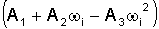

Il fattore di acentrismo è una misura di quanto si discosta la molecola della specie considerata dalla simmetria sferica. Il valore zero corrisponde ad una molecola centrata. Questo parametro entra in correlazioni che riflettono dell’influenza delle caratteristiche geometriche della molecola sul comportamento del sistema.
I coefficienti dell’equazione mi = 
· A1=0,480
· A2=1,574
· A3=0,176
Essi vengono utilizzati nelle routines SOAVEH e SOAVEW